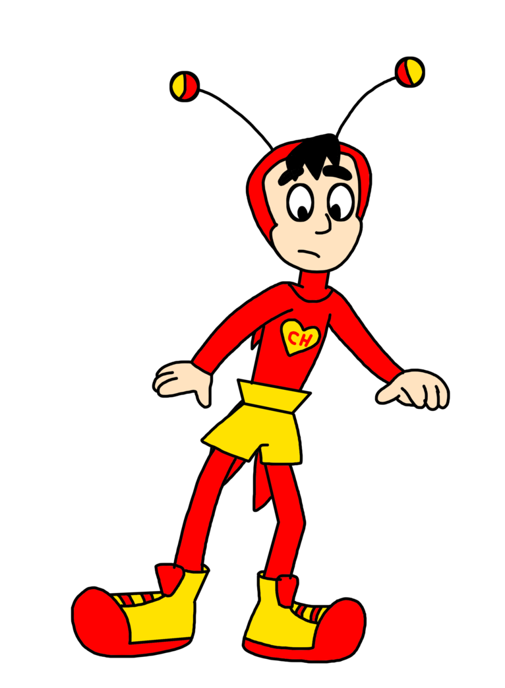
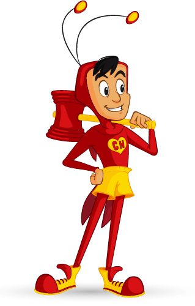
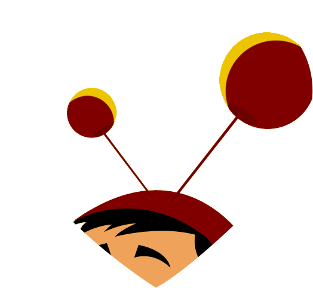
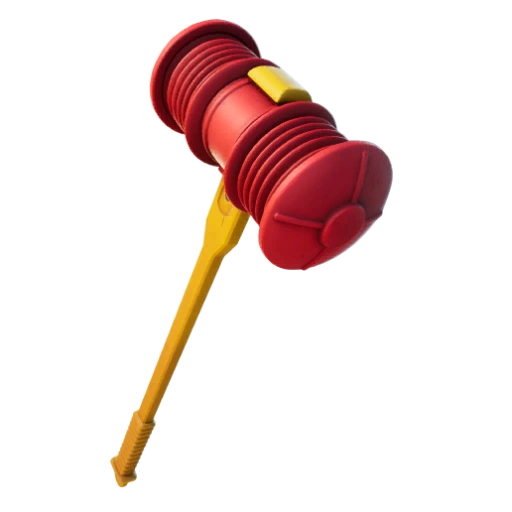
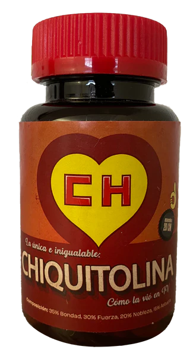

El Chapulín Colorado, cuyo nombre completo es Chapulín Colorado Lane[1] (Chapolin Colorado/Polegar Vermelho en portugués), es el personaje principal de la serie del mismo nombre . Es un superhéroe poco común, que no cuenta con grandes habilidades, pero que pese a todo logra superar sus defectos y sobreponerse a sus problemas.
El nombre de Chapulín proviene de la expresión náhuatl chapōlin que es el nombre con el que se conocen los saltamontes en México y EEUU. Y colaboro con fortnite

El Chapulín, con frecuencia y por equivocación, atrapaba a las personas inocentes y dejaba ir a los criminales, causando situaciones graciosas. Sin embargo, al final, todo se aclaraba (típicamente por otros o por algún accidente debido a sus errores) y los malos finalmente eran llevados a la cárcel, obteniendo el Chapulín todo el crédito de su captura, aunque no todos los episodios tenían un final agradable por factores de la trama.
Fue interpretado por Roberto Gómez Bolaños desde 1970 hasta 1992 tanto en la serie independiente como en Chespirito y Los supergenios de la mesa cuadrada. Con 22 años initerrumpidos fue unos de los personajes de Chespirito con mayor tiempo al aire.
Este superhéroe es poco común, no cuenta con las grandes habilidades de otros superhéroes como Superman o Batman, sin embargo logra superar sus defectos y sobreponerse a los problemas, y en esto subyace su grandeza como héroe y ser humano.

Lema:
“Más rápido que una tortuga,
Más fuerte que un ratón,
Más noble que una lechuga,
Su escudo es un corazón”
El Chapulín con frecuencia y por equivocación atrapa a las personas inocentes y deja ir a los criminales, causando situaciones graciosas.
Sin embargo, al final, todo se aclara (típicamente por otros o por algún accidente debido a sus errores) y los malos finalmente son llevados a la cárcel, obteniendo el Chapulín todo el crédito de su captura.
El Chapulín Colorado utiliza diversas herramientas para defender a los más necesitados y así lograr una victoria contundente. Además de su ingenio - muchas veces lleno de suerte e inocencia - es capaz de vencer a los villanos y dar el ejemplo donde el "bien vence al mal". Para ello utiliza algunas de estas armas:

Antenitas de vinil: El par de antenitas que el Chapulín posee en su cabeza están conectadas directamente a sus nervios. Estas le son de gran utilidad ya que detectan la presencia de un enemigo emitiendo un sonido. También avisan cuando alguien está en peligro y necesita auxilio. Además, detectan cualquier idioma del universo, y funcionan como radio a dos bandas. Otra característica es que el Chapulín puede calibrarlas para moverse a hipervelocidad.

Chipote Chillón: Es la principal arma del Chapulín Colorado. Consiste en un martillo de color rojo con mango amarillo con el cual golpea a los villanos. Es efectivo la mayoría de las veces, aunque con ciertos enemigos no tiene efecto. Posee la habilidad de aparecer volando cuando el Chapulín silba.

Pastillas de chiquitolina: Pastillas que al tomarlas reducen al Chapulín a aproximadamente 20 cms lo que le permite ingresar en sitios de difícil acceso. El efecto de las pastillas dura sólo unos cuantos minuto.
Chicharra paralizadora: Una corneta que le permite paralizar tanto personas como objetos. Con un chicharrazo los objetos se paralizan y con dos, vuelven a la normalidad.